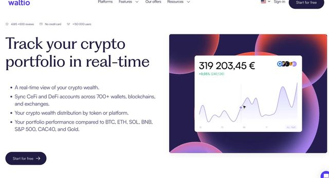

How to enter the German crypto market: a go-to-market playbook for 2026
MiCA groundwork, localization, the right channel mix and the Test → Win → Scale sequence: a practical playbook for crypto brands entering Germany in 2026.
Read articleService 01 · Go-to-Market
We turn your market entry into a plan you can run: market and competitor analysis, positioning, channel mix and a launch roadmap for Germany, Austria and Switzerland.
Go-to-Market Strategy
A crypto go-to-market strategy for Germany defines who you target, what you say, which channels you use in which order and how you measure traction – before the launch budget is spent. Germany is Europe's largest economy and one of its biggest crypto markets. Together with Austria and Switzerland, it gives you 100M+ German speakers to test on.
It is also a market that punishes copy-paste launches. DACH users read the fine print, prefer regulated providers and expect German-language support plus transparency on fees, security and regulation. Major ad platforms restrict crypto ads, and MiCA requires marketing communications to be fair, clear and not misleading. In many categories, local incumbents already own the brand recognition, the search rankings and the media relationships.
We build the strategy as operators who will also run it. Every recommendation ends in a channel plan our PR, KOL, content and partnership specialists can execute, sequenced along Test → Win → Scale: prove traction in Germany, win with the right channel mix, then expand to Austria, Switzerland and, through our network, France, Spain and Italy. Our guide explains how to enter the German crypto market step by step.
What you get
Who already wins in your category across DACH, how they position themselves, which channels and keywords they own and where the openings are for an international brand.
A positioning for the German market and a small set of core narratives that match local expectations on trust, security and regulation, turned into messaging your team can use.
Prioritized segments of German-speaking users, from first-time buyers to experienced traders, with the questions, objections and trust signals each segment needs before it signs up.
A marketing checklist covering MiCA, BaFin expectations and ad-platform rules, reviewed together with your legal counsel. We flag what needs clarifying; your lawyers give the legal advice.
Which channels to start with – PR, KOLs, content and SEO, partnerships, community – in which order and with which budget logic, structured along Test → Win → Scale.
A roadmap with milestones, owners and KPIs for each phase, plus a reporting setup that shows which channels drive sign-ups and which ones to cut.
How we work
Five steps from the first call to a running launch. Each one ends with something you can use, even if you execute parts in-house.
Step 01 / 05
We map your product, goals, current traction and constraints: licenses, markets you already serve, team capacity and what has or hasn't worked elsewhere in Europe. Then we agree on the decision the strategy has to support.
Step 02 / 05
We analyze German competitors, search demand, media and creator coverage and comparison platforms in your category, and identify where an international brand can credibly win attention and trust.
Step 03 / 05
We define positioning, narratives and audience priorities and run the regulatory-readiness check with your legal counsel, so claims, disclaimers and onboarding flows are ready for German users.
Step 04 / 05
We choose the channel mix, sequence it along Test → Win → Scale, set KPIs for each phase and define the first campaigns with clear owners, assets and reporting.
Step 05 / 05
Our specialists execute the plan or support your team. We review results against the KPIs, shift budget to the channels that perform and prepare the expansion to Austria, Switzerland and beyond.
Showcase · Waltio
Waltio, the French crypto tax tool with 150,000+ users, set out to establish itself among Germany's leading crypto tax providers – in a market held by local incumbents with a decade of brand, SEO and industry relationships. We built and ran the German go-to-market, timed around tax-season demand and split into four workstreams: SEO, launch PR, partnerships and owned content. Read the full Waltio case study.

“Michael helped us identify if Waltio can successfully find product-market fit in Germany in only a couple of months. Very dedicated and always reliable.”
Loïc Souvignet · Head of Marketing, Waltio
MarketWerk
Founder Michael Beches has worked full-time in crypto for 10+ years and has founded and exited multiple blockchain companies. Your strategy comes from people who have launched products themselves.
Our specialists for PR & Media, KOLs & Creators, Content and Partnerships run the plan they helped shape. There is no hand-off gap between the strategy deck and the first campaign.
120+ campaigns launched, 50,000+ users onboarded into clients' products and €2M+ revenue generated for clients in the German-speaking market. We plan with what has worked here.
FAQ
Question not answered?
Book a callIt covers market and competitor analysis, positioning and narratives for German-speaking users, audience priorities, a regulatory-readiness check with your legal counsel, the channel mix and its sequencing, KPIs and a launch roadmap. At MarketWerk the strategy is built to be executed: every recommendation turns into concrete PR, KOL, content, partnership or community activities with owners and metrics.
It depends on what you offer and how you are authorized. Under MiCA, crypto-asset service providers authorized in one EU member state can passport their services to Germany and Austria. Switzerland is outside MiCA and supervised by FINMA, and some products fall outside MiCA altogether. We are not lawyers: we work through these questions with your legal counsel before launch and align all marketing with the outcome.
No. Germany and Austria are EU members under MiCA, supervised by BaFin and the FMA. Switzerland is neither in the EU nor under MiCA and is supervised by FINMA. The tax treatment of private crypto gains differs between all three, and so do media, creators and language nuances. We usually start in Germany as the largest market and adapt messaging and channels from there. See our DACH market comparison.
Yes, and often that is the right test. We pick the channel with the clearest path to your first KPI – for example SEO content in a category with strong search intent, or creator explainers for a product that needs education. PR, partnerships or community follow once the signal is clear. Winning usually takes several channels working together, not one channel alone.
We agree on KPIs for each phase before launch. In the test phase they are leading indicators such as qualified traffic, search visibility, media coverage and sign-up conversion; in the win and scale phases they are users, revenue and acquisition cost by channel. Regular reporting shows what works and where we shift budget. We don't promise numbers we can't control.
Related services
02
Launch PR, native German press releases and earned media in DACH crypto, finance and tech outlets – built on stories editors want.
Learn more03
Vetted German-speaking crypto creators, compliant briefs and tracked campaigns on YouTube, X, Instagram, Telegram and podcasts.
Learn more04
German keyword research, SEO content and localization beyond translation – plus owned channels like YouTube and newsletters.
Learn moreFurther reading

MiCA groundwork, localization, the right channel mix and the Test → Win → Scale sequence: a practical playbook for crypto brands entering Germany in 2026.
Read article
One language, three markets: how Germany, Austria and Switzerland differ in regulation, currency, media and tax – and how to sequence your DACH entry.
Read articleBook an intro call. We'll look at your product, your goals and the German market and tell you honestly where we would start.